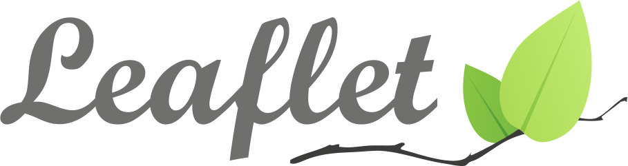

background-image: url(./assets/cover.png) background-size: cover class: center, middle # Making maps with <span style="font-weight:bold;font-family:sans-serif;">Ultra <img src="./assets/logo.png" style="vertical-align:middle;height:1.25em;"></span> ### Daniel Schep --- ### Introduction <span style="font-size: .5em">overpass-turbo.eu</span>  <span style="font-size: 3em"> + MapCSS</span> --- ### Introduction <span style="font-size: .5em">overpass-ultra.us</span> <img style="vertical-align: middle" src="./assets/maplibre.png" width="50%"> <img src="./assets/heatmap.png" width="45%"> <img src="./assets/bus-stops-glowing.png" width="45%"> --- ### Performance <span style="font-size: .5em">overpass turbo</span> <video width="100%" controls> <source src="./assets/turbo.webm"/> </video> --- ### Performance <span style="font-size: .5em">Ultra</span> <video width="100%" controls> <source src="./assets/ultra.webm"/> </video> --- ### Styling <span style="font-size: .5em">Overpass turbo - MapCSS</span> --- ### Styling <span style="font-size: .5em">Ultra - MapLibre</span> --- ### Styling <span style="font-size: .5em"> differences with MapLibre style spec</span> * No need to specify layer `source` when styling query result * No need to specify layer `id` * Extend existing `style.json` ``` style: extends: https://tiles.openfreemap.org/styles/liberty layers: ... ``` * YAML, including support for anchors ``` circle-color: &color red circle-stroke-color: *color ``` * `paint` & `layout` keys at layer root ``` - type: circle paint: circle-color: red ``` vs ``` - type: circle circle-color: red ``` --- ### Styling <span style="font-size: .5em">Vector style benefits</span> * Symbol collision * Sandwich layers --- ### Styling <span style="font-size: .5em">Bundled Icons</style> <div style="float:right;width:66%;"> <h4 style="margin-top:0;margin-bottom:.5em;">Noto Emojis <small>ex: <code>emoji:pizza</code></small></h4> <img style="width: 110%;" src="./assets/emoji.png"> </div> <h4 style="margin-top:0;margin-bottom:.5em;">Maki <small>ex: <code>maki:hospital</code></small></h4> <h4 style="margin-top:0;margin-bottom:.5em;">Temaki <small>ex: <code>temaki:donut</code></small></h4> --- ### Beyond Overpass <span style="font-size: .5em">query providers</span> <div style="float:right"> <code>+</code> default provider. <br><code>*</code> detected by <code>auto</code> provider. </div> <ul> <li><code>auto+</code></li> <li><code>overpass*</code></li> <li><code>postpass</code></li> <li><code>ohsome</code></li> <li><code>sparql</code></li> <li><code>qlever</code></li> <li><code>sophox</code></li> <li><code>geojson*</code></li> <li><code>kml*</code></li> <li><code>gpx*</code></li> <li><code>tcx*</code></li> <li><code>osmxml*</code></li> <li><code>osmjson*</code></li> <li><code>esri*</code></li> <li><code>raster*</code></li> <li><code>vector*</code></li> <li><code>raw*</code></li> <li><code>osmWebsite*</code></li> <li><code>osmWiki*</code></li> <li><code>taginfo*</code></li> </ul> --- ### Beyond Overpass <span style="font-size: .5em">planet-scale queries with QLever</span> <video width="100%" controls> <source src="./assets/qlever.webm"/> </video> --- ### Beyond Overpass <span style="font-size: .5em">Esri MapServer/FeatureServer</span> <img src="./assets/esri-featureserver.png" width="100%"> --- ### Transforms Use custom javascript and libraries like Turf.js to transform query results. --- class: center, middle # User Survey #### [overpass-ultra.us/survey](https://overpass-ultra.us/survey/) --- ### What's next? <br><br><br> * Export to HTML * A `ReloadControl` --- ### That's all folks! <br><br><br> * Use it: [overpass-ultra.us](https://overpass-ultra.us) * Documentation: [overpass-ultra.us/docs](https://overpass-ultra.us/docs) * These slides: [slides.schep.me/ultra-sotm-us-2025](https://slides.schep.me/ultra-sotm-us-2025/) * Source code: [gitlab.com/trailstash/ultra](https://gitlab.com/trailstash/ultra) * Contact me: * <a href="https://osmus.slack.com/team/U04AYHWCY3A"><kbd>@Daniel Schep</kbd></a> on OSM US Slack * <a href="https://mastodon.social/@dschep"><kbd>@dschep@mastodon.social</kbd></a> on Mastodon * <a href="https://bsky.app/profile/trailsta.sh"><kbd>@trailsta.sh</kbd></a> on Bluesky